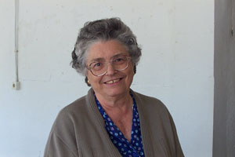

Hermana Aurina
Siempre serás nuestro ángel
Biografía
Se le acercó un hombre y le dijo: “Maestro, ¿qué tengo que hacer de bueno para alcanzar la vida eterna?” Él le dijo: “¿Qué me preguntas acerca de lo que es bueno? El único bueno es Dios. Pero, si quieres entrar en la vida, guarda los mandamientos”.
Replicó: “¿Cuáles?” Jesús dijo:”No matarás, no cometerás adulterio, no robarás, no levantarás falsos testimonios, honra a tu padre y a tu madre y ama a tu prójimo como a ti mismo.” El joven le dijo: “Todo eso lo he guardado. ¿Qué más hace falta?” Jesús le dijo: “Si quieres ser perfecto, anda, vende todo lo que tienes y dáselo a los pobre, y tendrás un tesoro en el cielo. Después, ven y sígueme”. Al oír esto, el joven se fue muy triste porque tenía muchos bienes.
Jesús dijo a sus discípulos: “Os aseguro que un rico difícilmente entrará en el Reino de Dios. Es más fácil que un camello pase por el ojo de una aguja que un rico entre en el Reino de Dios” Al oír esto los discípulos, se quedaron asombrados y dijeron: “Entonces, ¿quién puede salvarse?” Jesús los miró y les dijo: “Para los hombres esto es imposible, pero para Dios todo es posible”.
¿QUIÉN ES NUESTRO ÁNGEL?
Esto mismo es lo que hizo la Hermana Aurina. Dejarlo todo y dedicar su vida a los demás. Fruto de su empeño, su fuerza y su tesón nacen los Montañeros del Santo Ángel.
Señor te damos gracias por Aurina, por su vida. Asturiana, amante de su tierra, tía, hermana y amiga. Fuerza, tesón y amor de todos nosotros.
Señor te damos gracias por su trabajo apostólico, por toda su vida de enseñanzas, por difundir tu mensaje entre nosotros, allá donde ha ido. En esta labor evangélica te damos gracias por el grupo que ha creado. Gracias por su entrega, su fuerza, su vitalidad y su energía. Porque nos sentimos un poco huérfanos, ya que su grupo es, más que un grupo, una familia.
Si alguien ha sabido sembrar semilla en nuestros corazones ha sido ella, en todos ha dejado algo bueno y ha calado. Gracias por tantos momentos vividos, por los sahucos, por las oraciones, miles de miradas, de cariño y a veces de reproche, frases que nos han llenado y servido en nuestras vidas; decir todo lo que pensaba, enfadarse y vivir.
Ahora es un Ángel de la Guarda, cuidando a sus Montañeros, y aunque no tengamos su apoyo físico, nos llevará en sus brazos en los momentos difíciles.
Señor, te damos gracias por su vida en la Congregación de las Hermanas del Ángel de la Guarda. Gracias a ellas y su apoyo incondicional, por su vocación. Aurina sintió tu llamada y ellas han sido compañeras en el camino de la fe. Una fe que ha vivido en comunidad y ha enseñado a vivir entregados a ti.
Señor, que sepamos recoger todas estas enseñanzas, vivirlas y transmitirlas, saber demostrar todo lo que nos ha dado. Es y será un gran corazón y un gran motor para todos los que hemos compartido momentos con ella, familia, hermanas, amigos, y grupo.
Siempre serás nuestro ángel